扉页
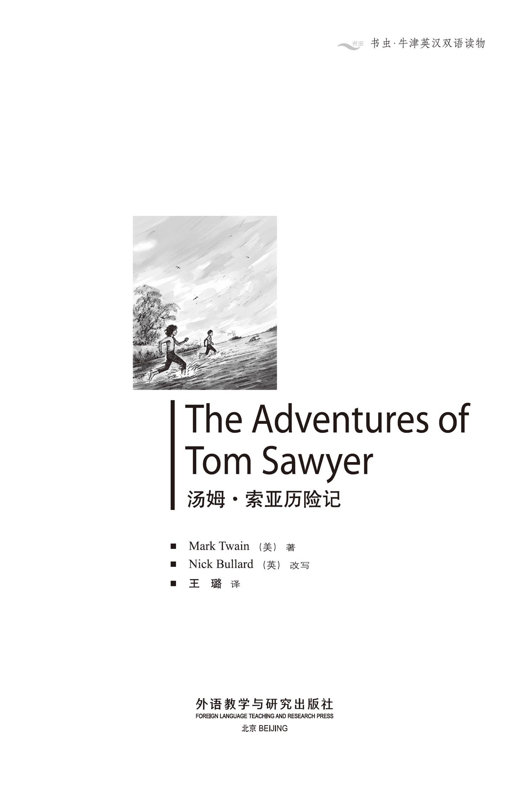
版权页
京权图字01-2006-3290
Originally published by Oxford University Press, Great Clarendon Street, Oxford. © 2000 This edition is licensed for sale in the People's Republic of China only and not for export therefrom.
'Oxford' is a registered trademark of Oxford University Press.
只限中华人民共和国境内销售，不包括香港特别行政区、澳门特别行政区及台湾省。不得出口。
图书在版编目（CIP）数据
汤姆·索亚历险记＝The Adventures of Tom Sawyer／（美）马克·吐温（Twain，M.）著；（英）布拉德（Bullard，N.）改写；王璐译．— 北京：外语教学与研究出版社，2007.7（2014.11 重印）
（书虫·牛津英汉双语读物）
ISBN 978-7-5600-6813-8
Ⅰ．汤… Ⅱ．①马…②布…③王… Ⅲ．①英语—汉语—对照读物②儿童文学—长篇小说—美国—近代 Ⅳ．H319.4:I
中国版本图书馆CIP数据核字（2007）第104899号
出版人： 蔡剑峰
责任编辑：王霖霖
封面设计：孙莉明
出版发行：外语教学与研究出版社
社 址：北京市西三环北路19号(100089)
网 址：http://www.fltrp.com
版 次：2007年7月第1版
书 号：ISBN 978-7-5600-6813-8
* * *
凡侵权、盗版书籍线索，请联系我社法律事务部
举报电话：(010)88817519 电子邮箱：banquan@fltrp.com
法律顾问：立方律师事务所 刘旭东律师
中咨律师事务所 殷 斌律师
内容简介
内容简介
汤姆·索亚不喜欢上学，不喜欢劳动，也从不喜欢在早上早起。但他喜欢游泳和钓鱼，还有和小伙伴们一起去冒险。他有许许多多的冒险经历。
但是汤姆的这些经历有时危机四伏。一天晚上，他和哈克·费恩在坟场上看到三个男人。他们是谁？半夜在坟场干吗？然后这两个孩子看到其中一人是印江·乔……
汤姆和哈克永远不会忘记那个晚上。他们害怕印江·乔——他们应该害怕，因为印江·乔用刀极快……
THE ADVENTURES OF TOM SAWYER
THE ADVENTURES OF TOM SAWYER
Tom Sawyer does not like school. He does not like work, and he never wants to get out of bed in the morning. But he likes swimming and fishing, and having adventures with his friends. And he has a lot of adventures.
But Tom's adventures can be dangerous, too. One night in the graveyard he and Huck Finn see three men. Who are they? And what are they doing in the graveyard, in the middle of the night? Then the boys see that one of the men is Injun Joe...
Tom and Huck never forget that night. They are afraid of Injun Joe — and they are right to be afraid because Injun Joe is very quick with a knife...
目录
1. Tom and his friends
1
Tom and his friends
'Tom! Tom! Where are you?'
No answer.
'Where is that boy? When I find him, I'm going to...'
Aunt Polly looked under the bed. Then she opened the door and looked out into the garden.
'Tom!'
She heard something behind her. A small boy ran past, but Aunt Polly put out her hand and stopped him.
'Ah, there you are! And what's that in your pocket?'
'Nothing, Aunt Polly.'
'Nothing! It's an apple! I can see it. Now listen, Tom. Those apples are not for you, and I —'
'Oh, Aunt Polly! Quick — look behind you!'
So Aunt Polly looked, and Tom was out of the house in a second. She laughed quietly. 'I never learn. I love that Tom, my dead sister's child, but he isn't an easy boy for an old lady. Well, it's Saturday tomorrow and there's no school, but it isn't going to be a holiday for Tom. Oh no! He's going to work tomorrow!'
* * *
Saturday was a beautiful day. It was summer and the sun was hot and there were flowers in all the gardens. It was a day for everybody to be happy.
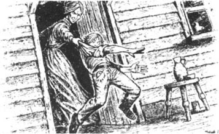
Tom came out of his house with a brush and a big pot of white paint in his hand. He looked at the fence; it was three metres high and thirty metres long. He put his brush in the paint and painted some of the fence. He did it again. Then he stopped and looked at the fence, put down his brush and sat down. There were hours of work in front of him and he was the unhappiest boy in the village.
After ten minutes Tom had an idea, a wonderful idea. He took up the brush again and began work. He saw his friend Joe Harper in the street, but he didn't look at him. Joe had an apple in his hand. He came up to Tom and looked at the fence.
'I am sorry, Tom.'
Tom said nothing. The paint brush moved up and down.
'Working for your aunt?' said Joe. 'I'm going down to the river. I'm sorry you can't come with me.'
Tom put down his brush. 'You call this work?' he said.
'Painting a fence?' said Joe. 'Of course it's work!'
'Perhaps it is and perhaps it isn't. But I like it,' said Tom. 'I can go to the river any day. I can't paint a fence very often.'
Joe watched Tom for about five minutes. Tom painted very slowly and carefully. He often stopped, moved back from the fence and looked at his work with a smile. Joe began to get very interested, and said:
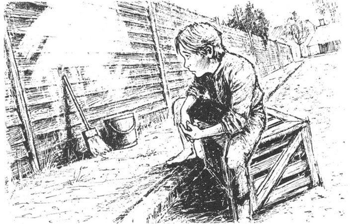
'Tom, can I paint a little?'
Tom thought for a second. 'I'm sorry, Joe. You see, my aunt wants me to do it because I'm good at painting. My brother Sid wanted to paint, too, but she said no.'
'Oh, please, Tom, just a little. I'm good at painting, too. Hey, do you want some of my apple?'
'No, Joe, I can't —'
'OK, you can have all my apple!'
Tom gave Joe the brush. He did not smile, but for the first time that day he was a very happy boy. He sat down and ate Joe's apple.
More friends came to laugh at Tom, but soon they all wanted to paint, too. By the afternoon Tom had three balls, an old knife, a cat with one eye, an old blue bottle, and a lot of other exciting things. He was the richest boy in St Petersburg, and the fence — all thirty metres of it — was a beautiful white. He went back to the house.
'Aunt Polly! Can I go and play now?'
Aunt Polly came out of the house to look. When she saw the beautiful white fence, she was very pleased. She took Tom into the house and gave him an apple.
'Well, you can go and play. But don't come home late.'
Tom quickly took a second apple and ran off.
* * *
On Monday morning Tom didn't want to go to school, but Aunt Polly got him out of bed, and then out of the house. In the street near the school he met his friend Huckleberry Finn. Huck had no mother, and his father drank whiskey all the time, so Huck lived in the streets. He didn't go to school, he was always dirty, and he never had a new shirt. But he was happy. The mothers of St Petersburg didn't like Huck, but Tom and his friends did.
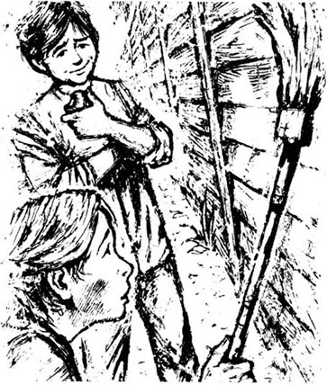
'Hello, Huck!' said Tom. 'What have you got there?'
'A dead cat.'
'What're you going to do with it?' asked Tom.
'I'm going to take it to the graveyard tonight,' Huck said. 'At midnight. A dead cat can call ghosts out of their graves.'
'I never heard that,' said Tom. 'Is it true?'
'Well, I don't know,' said Huck. 'Old Mrs Hopkins told me. Come with me, and see. Or are you afraid of ghosts?'
'Of course not!' said Tom. 'Come and meow for me at my window at eleven o'clock.'
After this, Tom was late for school, and the teacher looked at him angrily.
'Thomas Sawyer, why are you late again?' he said.
Tom began to speak, and then stopped. There was a new girl in the schoolroom — a beautiful girl with blue eyes and long yellow hair. Tom looked and looked.
Oh, how beautiful she was! And in two seconds Tom was in love! He must sit next to her. But how?
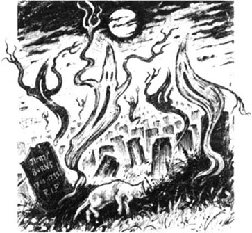
In the girls' half of the room there was only one empty chair, and it was next to the new girl. Tom thought quickly, and then looked at the teacher.
'I stopped to talk with Huckleberry Finn!' he said.
The teacher was very, very angry. Boys were often late for school. That was bad, but talking with Huckleberry Finn was worse, much worse! The teacher took his stick, and two minutes later Tom's trousers were very hot and the teacher's arm was very tired.
'Now, Tom Sawyer, you go and sit with the girls!'
Some of the children laughed. Tom walked to the chair next to the new girl, sat down and opened his book. The other children began to work again.
After ten minutes, the girl looked up. There was an apple on the table in front of her. She put it back on Tom's half of the table. A minute later the apple was in front of her again. Now it stayed. Next, Tom drew a picture of a house and put it in front of her.
'That's nice,' the girl said. 'Now draw a man.'
Tom drew a man next to the house. The man was taller than the house, and he had very big hands and very long legs. But the girl liked him.
'Can you draw me now?' she asked.
Tom drew a girl next to the man.
'You draw beautifully. I can't draw pictures.'
'I can teach you,' said Tom. 'After school.'
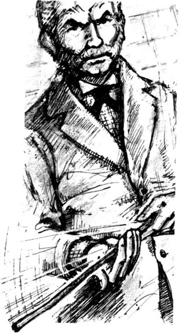
'Oh, please!'
'What's your name?' Tom asked.
'Becky. Becky Thatcher.'
Just then Tom felt a hand on his head. It was the teacher. He took Tom by the ear and moved him back to his chair in the boys' half of the room.
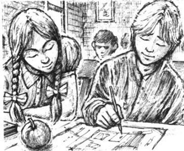
aunt n. the sister of your mother or father 姨母；姑母
pocket n. a small bag sewn into or on clothing, for carrying small articles 口袋
in a second in a very short period of time 片刻；瞬间
holiday n. a day or a period when no work needs to be done 假日；休息日
brush n. an object used for painting, cleaning, etc. 刷子
fence n. usually a wood or wire barrier enclosing an area 栅栏
be good at to be skillful at something or doing something 擅长做某事
laugh at to treat someone or something as if they are stupid, by laughing and making funny remarks about them 嘲笑；取笑
run off to suddenly leave a place or person 逃跑
whiskey n. a strong alcoholic drink 威士忌
ghost n. supposed apparition of a dead person or animal; disembodied spirit 鬼；幽灵
meow v. to make the crying sound a cat makes 喵喵叫
empty adj. with nothing in it 空的
stick n. a short slender length of wood 枝条；棍；棒
in front of ahead of; before 在前面
汤姆和他的伙伴们
1．汤姆和他的伙伴们
“汤姆，汤姆，你在哪儿？”
没有人回答。
“这小鬼又跑哪儿去了，等我找到他，我要……”
波莉姨妈看了看床下，然后打开房门向花园望去。
“汤姆！”
她听到身后有动静。一个小男孩儿正要跑过，但是波莉姨妈伸出手把他拦住。
“哈，你在这儿！你的口袋里是什么？”
“什么都没有啊，波莉姨妈。”
“没有！那是个苹果！我看见了。现在听着，汤姆。这些苹果不是给你的，我要——”
“哎，波莉姨妈！快——看你后面！”
波莉姨妈看了一下，汤姆一转眼就跑出了屋子。她轻轻地笑了。“我又没长记性。我爱汤姆，我那死去的姐姐的孩子，但是我这个老太婆管不住他。明天是星期六，不用上学，但是汤姆不能放假。噢不！他明天可得要干活儿！”
* * *
星期六天气不错。夏天到了，艳阳高照，花园里繁花似锦。这是个人人都应该开心的好日子。
汤姆拿着一把刷子和一大桶白油漆从屋里走出来。他看着栅栏，栅栏足足有3米高、30米长。他把刷子蘸上油漆，开始刷栅栏，然后照旧这般。接着，他停了下来，看了看栅栏，放下刷子，坐了下来。他面前是好几个小时的工作呢，他是村庄里最不快乐的男孩儿了。
十分钟后，汤姆想出了一个主意，一个绝妙的主意。他重新把刷子拿起来，开始工作。他看到他的朋友乔·哈珀在街上，但是不去看他。乔手上拿着一个苹果。他走到汤姆面前，看着栅栏。
“我真为你难过，汤姆。”
汤姆不说话，拿着刷子刷上刷下。
“帮你姨妈干活儿呢？”乔问道，“我要去河边。真可惜你不能和我一起去。”
汤姆放下刷子。“你管这叫干活儿？”他说。
“刷栅栏？”乔说，“当然是干活儿啦！”
“也许是，也许不是。但是我喜欢。”汤姆说，“我哪天去河边都成，但并不总是有机会刷栅栏啊。”
乔盯着汤姆看了差不多有五分钟。汤姆非常认真地慢慢刷着油漆。他时不时停下来，后退两步，看着自己的杰作微笑。乔开始感兴趣了，他问道：
“汤姆，我能刷一会儿吗？”
汤姆想了一下。“对不起，乔。你知道吗，我姨妈让我来干这活儿是因为我刷得好。我弟弟锡德也想刷呢，但她不同意。”
“哦，求求你，汤姆，就一点儿成吗？我也刷得挺好的。嗨，你想来点儿我的苹果吗？”
“不行，乔，我不能——”
“好吧，我把整个苹果都给你！”
汤姆把刷子递给乔。他没有笑，但那是他那天第一次非常开心。他坐了下来，吃着乔的苹果。
更多的伙伴过来嘲笑汤姆，但不久他们就都想要刷油漆了。到下午时，汤姆已经有了三个球、一把旧的小刀、一只独眼猫、一个旧的蓝瓶子和其他许多稀奇玩意儿。现在他是圣彼得斯堡最富有的男孩儿了，而那道栅栏——整整30米长的栅栏——被涂上了美丽的白色。他走回屋子。
“波莉姨妈！现在我能出去玩了吗？”
波莉姨妈走出屋来检查，当她看到漂亮的白色栅栏时，非常满意。她把汤姆带回屋里，给了他一个苹果。
“好，你现在可以去玩了，但是别回来得太晚。”
汤姆飞快地又拿了一个苹果，跑出去了。
* * *
星期一的早上，汤姆不想去上学，但是波莉姨妈把他揪下床，丢出了门。在学校附近的街上，他遇到了好朋友哈克贝利·费恩。哈克没有母亲，父亲成天喝酒，所以哈克就露宿街头了。他不上学，总是脏兮兮的，从来没穿过新衣服，但是他很快乐。圣彼得斯堡的妈妈们不喜欢他，但是汤姆和伙伴们都喜欢他。
“你好啊，哈克！”汤姆说，“你那是弄了个什么？”
“一只死猫。”
“你要把它怎么样？”汤姆问。
“我打算今晚把它拿到坟场去。”哈克说，“在午夜的时候，一只死猫能把坟墓里的鬼魂召出来。”
“我从来没听说过。”汤姆说，“是真的吗？”
“哦，我不知道。”哈克说，“是老霍普金斯太太告诉我的。跟我来看看吧，你就能知道了。你不会害怕鬼吧？”
“当然不！”汤姆说，“11点钟到我窗口学猫叫叫我。”
这之后，汤姆上学迟到了，老师生气地看着他。
“托马斯·索亚，你怎么又迟到了？”他说。
汤姆开始讲话，然而又停住了。教室里有个新来的女生——一个有着蓝眼睛、黄色长发的漂亮女孩子。汤姆打量个不停。
哦，她长得多漂亮啊！短短两秒钟内，汤姆恋爱了！他必须坐在她旁边。但怎么做呢？
在女生坐的那半边教室，只有一个空座位，就在那个新来女孩儿旁边。汤姆的脑筋转得飞快，然后他看着老师。
“我停下来和哈克贝利·费恩聊天了！”他说。
老师非常非常气愤。男孩子上学经常迟到，这当然不对，但是和哈克贝利·费恩讲话就更有错，大错特错！老师拿起了教鞭，两分钟后，汤姆的裤子都热辣辣的了，老师的胳膊也累得打不动了。
“现在，汤姆·索亚，你去和女生坐在一起。”
有几个孩子笑了起来。汤姆走到新来的女生旁边的座位，坐下来，把书打开。其他的孩子也重新开始学习。
十分钟后，那女孩儿抬起头。她面前的桌上多了个苹果。她把苹果放回汤姆那边的桌上。很快，苹果又出现在她面前。这一次苹果没被推回去。接下来，汤姆画了一座房子，摆在她面前。
“画得真好。”女孩儿说，“再画个男人吧。”
汤姆在房子旁边画了个男人，人比房子还高，两手大大，双腿长长，但是那女孩儿喜欢。
“你能画个我吗？”她问。
汤姆在男人的旁边加上那女孩儿。
“你画得真漂亮，我就不会画画。”
“我教你吧。”汤姆说，“等放了学。”
“噢，好啊！”
“你叫什么名字？”汤姆问。
“贝姬，贝姬·撒切尔。”
就在这时，汤姆感觉到一只手落到他头上，是老师的手！他拧着汤姆的耳朵，把他拖回到了男生那半边他自己的座位上。
2. In the graveyard
2
In the graveyard
That night Tom went to bed at half past nine. He waited for Huck's meow, and at eleven o'clock it came. He climbed quietly out of the bedroom window, and then he and Huck walked out of the village with the dead cat.
The graveyard was on a hill, about a mile from St Petersburg. When the boys got there, they put the dead cat on a grave, and sat down behind some trees. They watched, and waited. It was very dark, and very quiet.
'Do you see that new grave there?' whispered Huck. 'That's Hoss Williams' grave. He died last week.'
'Perhaps he can hear us,' Tom whispered back. 'Do you think he can, Huck?'
'I don't know, but I — '
'Sh!'
'Oh, Tom, what is it?'
'Sh!' whispered Tom. 'I can see something. Look!'
Huck moved nearer to Tom. 'Ghosts!' he said. 'Three of them! They're coming here, Tom! Oh, let's go home!'
'They can't see us,' Tom whispered. 'Not here.'
'Ghosts can see through trees,' said Huck unhappily. 'They can see through everything!'

The ghosts moved quietly through the graveyard and came nearer to the trees. Huck and Tom watched, very afraid. Then, after a minute, Huck said:
'Tom! They're not ghosts. That's Muff Potter.'
'So it is. And that's Injun Joe. And the other man is Doctor Robinson. What are they doing here?'
'They're graverobbers, Tom! They're going to rob a grave! My father told me about it. The doctor wants a dead body, you see. He cuts it up because he wants to learn about —'
'Sh!' said Tom. 'They're getting near.'
The three men stopped at Hoss Williams' grave and Injun Joe and Muff Potter began to dig. Ten minutes later the grave was open.
'Now, doctor,' said Muff Potter. 'You want us to take the body to your house? That's five dollars more.'
'No!' said the doctor. 'I gave you the money this morning. I'm not giving you any more!'
'Now you listen to me, doctor!' said Injun Joe. 'I want that money! Do you remember a day five years ago? I came to your house and asked for something to eat. And you gave me nothing. Nothing! So give me that money!'
He took the doctor's arm, but suddenly the doctor hit him, and Injun Joe fell to the ground.
'Don't hit my friend!' cried Muff Potter. He jumped on the doctor and the two men began to fight.
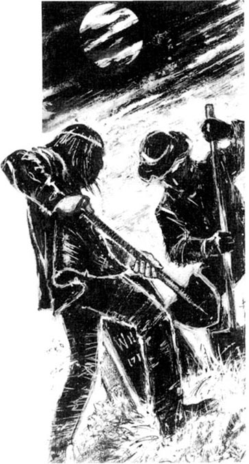
It all happened very quickly, and the two boys watched with open mouths. Injun Joe got up. He had Muff Potter's knife in his hand now, and he moved behind the doctor. Then the doctor hit Muff Potter on the head. Muff fell to the ground, and at the same moment the knife in Injun Joe's hand went into the doctor's back. The doctor fell to the ground, on top of Muff Potter, and he did not move again.
The two boys could watch no more. Very quietly, they moved away from the trees, and then ran out of the graveyard and back to the village.
Injun Joe stood by Hoss Williams' grave and looked down at the two men. Then he put the knife into Muff Potter's hand and sat down. Three — four — five minutes went by. Potter moved a little and opened his eyes.
'What — what happened, Joe?' he asked.
'This is bad, Muff,' said Joe. 'Why did you kill him?'
Muff looked at the doctor's dead body, then at the knife in his hand. 'Me? Did I kill him?' His face went white, and the knife fell from his hand. 'It's the whiskey, Joe! I never fight with knives usually. Oh, why did I drink all that whiskey tonight? I don't remember anything!'
'It's OK, Muff,' said Joe. 'I'm not going to tell anyone. You get away quickly. Go on — go now!'
Muff Potter got up and ran away. Joe watched him for a minute, then he carefully put the knife next to the doctor's body. Then he, too, left the graveyard.
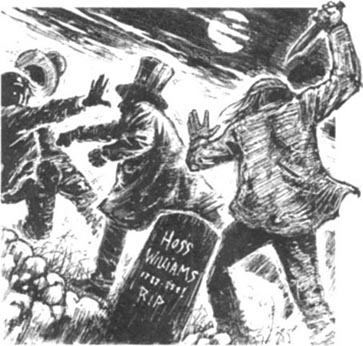
* * *
The next day the Sheriff's men found the doctor's body in the graveyard — and Muff Potter's knife. That night Muff came to the graveyard to get his knife. But the Sheriff's men were there, and they took Muff to St Petersburg's little jail. And there Muff sat for four weeks, and waited for his trial.
* * *
Tom and Huck could not forget that night in the graveyard. They were very unhappy, and very afraid.
'What're we going to do?' said Tom. 'Muff Potter didn't kill the doctor — Injun Joe did. We saw him!'
'I know,' Huck said. 'But what can we do? We can't tell anyone. I'm afraid of Injun Joe. He's dangerous. And he's a killer. Do you want a knife in your back?'
'Yes, I'm afraid of him, too,' Tom said. He thought for a minute. 'I'm sorry for Muff Potter, but you're right, Huck. We can't tell anyone about Injun Joe.'
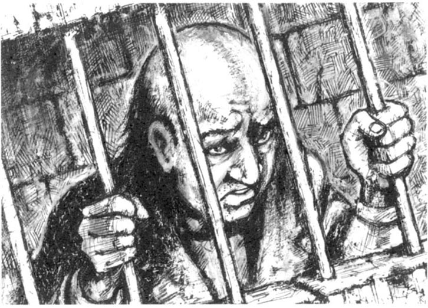
whisper v. to talk very quietly 小声地说，耳语
graverobber n. people who rob a grave 盗墓者
dig v. to make a hole in the ground or move earth 挖
fight v. if people or animals, fight, they hit, kick, or bite each other 打架
go by to pass 过去
sheriff n. the person in charge of the law and the police in an American town （美国）地方治安官
jail n. prison; a place where prisoners are kept 监狱
trial n. the time when judges and other people decide who is, or is not, a robber, a murderer, etc. 审讯
坟场命案
2．坟场命案
那天晚上，汤姆在9点半上了床，等着哈克来叫他。11点钟时，哈克来了。汤姆悄悄地从卧室窗户爬出去，然后和哈克带着死猫出了村庄。
坟场在一座小山上，离圣彼得斯堡大概一英里。两个男孩儿到达之后，把死猫放在一个坟头上，坐在树丛后面边看边等。四周黑漆漆的，非常安静。
“你看到那个新坟了吗？”哈克小声说，“那是霍斯·威廉斯的坟。他上星期死的。”
“也许他能听到我们。”汤姆也小声回应，“你觉得他能吗，哈克？”
“我不知道，但是我——”
“嘘！”
“哎呀，汤姆，那是什么？”
“嘘！”汤姆低声说，“我看见有东西。看！”
哈克朝汤姆挪近了些。“是鬼！”他说，“有三个呢！它们过来了，汤姆！呃，我们回家吧！”
“它们看不到我们。”汤姆低声说，“在这儿看不到。”
“鬼能够看穿树。”哈克不高兴地说，“它们能看穿一切！”
几个鬼静悄悄地穿过坟场，来到树丛附近。哈克和汤姆心惊胆战地看着他们，过了一会儿，哈克说：
“汤姆！那不是鬼。那是穆夫·波特。”
“是他，还有印江·乔。另外那个人是鲁宾逊医生。他们在这儿干吗？”
“他们是盗墓贼，汤姆！他们是来盗墓的！我爸爸告诉过我。这个医生想要一具尸体，你明白了吧。他要把尸体剖开，因为他想知道——”
“嘘！”汤姆说，“他们走近了。”
三个人在霍斯·威廉斯的墓前停下，印江·乔和穆夫·波特开始挖掘。十分钟后，墓被挖开了。
“好了，医生，”穆夫·波特说道，“你想让我们帮你把尸体抬到家？再加五块钱吧。”
“不行！”医生说，“我早上给过你钱，不会再给了！”
“现在听我说，医生！”印江·乔说道，“我要那钱！你还记得五年前的一天吧？我到你家里讨口饭吃，你什么都没给我。什么都没给！还是给钱吧！”
他抓住医生的胳膊，但是医生猛地给了他一拳，他摔倒在地上。
“你敢打我的哥们儿！”穆夫·波特大叫。他扑向医生，两个人扭打起来。
一切发生得太快。两个男孩儿张大了嘴看着。印江·乔站了起来，来到医生的背后，他手上拿着穆夫·波特的刀。这时，医生一拳打中穆夫·波特的头。穆夫倒在地上。与此同时，印江·乔手上的刀插进了医生的后背。医生倒了下去，倒在穆夫·波特的身上，再也不动了。
两个男孩儿不敢再看下去了，他们小心翼翼地离开树丛，然后一口气跑出坟场，回到村庄。
印江·乔站在霍斯·威廉斯的墓旁，低头看着那两个家伙，然后他把刀放到穆夫·波特手里，坐下来。三分钟——四分钟——五分钟过去了，波特动了动，睁开了眼睛。
“怎么了——发生了什么，乔？”他问道。
“太糟糕啦，穆夫。”乔说，“你怎么把他给杀啦？”
穆夫看着医生的尸体，又看看手里的刀。“我？我杀了他？”他的脸变得惨白，刀从手上滑落下来。“都是威士忌害的，乔！一般我打架从来不用刀啊。唉，今天晚上我干吗喝那么多威士忌？我什么都不记得了！”
“别紧张，穆夫。”乔说，“我不会告诉任何人，你快跑吧。走——现在就走！”
穆夫·波特站起身来，逃走了。乔盯着他看了一阵，然后小心地把刀放在医生的尸体旁。随后，他也离开了坟场。
* * *
第二天，治安官的手下在坟场发现了医生的尸体——还有穆夫·波特的刀。当天晚上，穆夫回到坟场拿他的刀，但是警察已经等在那里了。他们把穆夫带回了圣彼得斯堡的小监狱。穆夫在那里关了四个星期，等待受审。
* * *
汤姆和哈克都忘不了坟场的那个夜晚。他们很郁闷，也很害怕。
“我们该怎么办？”汤姆说，“穆夫没杀医生——是印江·乔干的。我们看到是他干的！”
“我知道。”哈克说，“可是我们能做什么？我们谁都不能告诉。我害怕印江·乔。他太危险了，他是个杀人犯。你想自己的背后也挨一刀吗？”
“对啊，我也害怕他。”汤姆说。他想了一会儿。“我为穆夫·波特难过，但是你说得对，哈克。我们不能告诉任何人印江·乔的事。”
3. On Jackson's Island
3
On Jackson's Island
The summer holidays came, and there was no school. Tom didn't want to think about Muff Potter and Injun Joe, but it wasn't easy. At night, when he was in bed, he saw Injun Joe's face in the dark, and he couldn't sleep. But he couldn't talk to anyone about it.
One hot summer's day he and Joe Harper were down by the Mississippi River. They sat and watched the boats, and fished and talked.
'Let's get away from here!' said Tom, suddenly. 'Let's go and do something exciting somewhere.'
'OK,' said Joe. 'But what? And where?'
'I know,' Tom said. 'Let's run away. Let's go and live on Jackson's Island. We can sleep out, under the trees.'
Jackson's Island was in the Mississippi, three miles south of St Petersburg. Nobody lived there.
'Let's ask Huck Finn, too,' said Tom. 'But don't tell your mother or father or anyone. Go home and get some things to eat, and meet me here at midnight.'
So that night three boys in a small boat went down the river to Jackson's Island. They had some bread and some meat, and Huck had his pipe, too. When they got there, they carried everything on to the island and made a fire, under a big old tree. Then they cooked some of the meat over the fire, and oh, that meat was good — the best dinner in the world! Soon, they stopped talking, their eyes closed, and they slept.
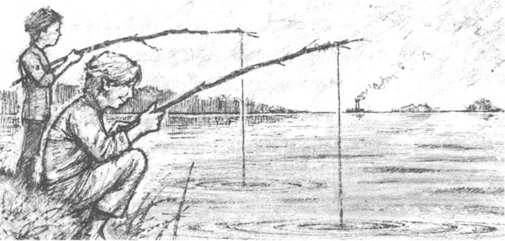
The next morning Tom woke up with the sun on his head and a smile on his face. Then Huck and Joe woke up, and the three boys ran down to the river to swim. After that, they fished, and soon they had about six big fish for their breakfast. They cooked the fish on their fire and ate them all. They were very hungry.
'That,' said Joe happily, 'was a wonderful breakfast!'
After breakfast they walked through the island, swam some more, talked, fished, and swam again. They came back to their fire in the afternoon. Suddenly, Tom looked up and said, 'Listen. Can you hear boats?'
They listened, and then ran across the island to look down the river. There were twenty or more boats on the water. Every boat in St Petersburg was out.
'What are they doing?' asked Joe.
'They're Looking for a dead body, I think,' said Huck. 'They did that last summer when Bill Turner fell in the river and drowned.'
'Who's dead, do you think?' asked Joe.
The boys watched the boats. Suddenly, Tom cried, 'I know who's dead! It's us! They're looking for us!'
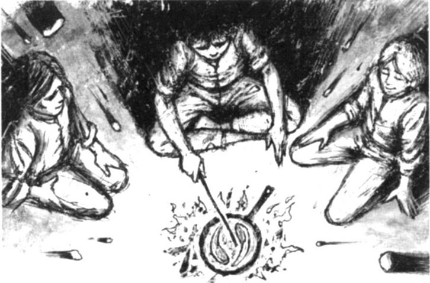
This was wonderful. Tom looked at his friends. 'We're famous!' he said. 'Everybody in St Petersburg is talking about us. And they all feel sorry for us!'
Night came, and the boys went to sleep. But Tom did not sleep, and when morning came, he wasn't there!
'Huck, where's Tom?' cried Joe.
'I don't know,' Huck began, 'but — Look! There he is. He's swimming across to the island now. Hey, Tom!'
At breakfast Tom told his story. 'I went home last night,' he said, 'and listened at the window. Joe, your mother was there, too, and she and Aunt Polly cried and cried. I heard some very interesting things. On Sunday there's going to be a big funeral at the church — for us! And listen— I've got a wonderful idea.'
Huck and Joe listened and laughed, and yes, it was a wonderful idea.
That night the boys cooked some more fish, and after dinner Huck got out his pipe and began to smoke.
'Can we smoke, too?' asked Tom. 'I want to learn.'
So Huck made pipes for Tom and Joe, and the three boys sat and smoked.
'Hey, I like smoking,' said Tom. 'It's easy!'
'It's nothing!' said Joe. 'I'm going to smoke every day.'
But after ten minutes Tom and Joe got quieter and quieter and their faces went an interesting colour.
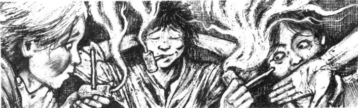
'I'm going for a little walk now,' said Tom. He stood up, carefully, and walked away into the trees.
'Me too,' said Joe, quickly.
The two boys came back an hour later. But they didn't smoke their pipes again.
* * *
On Sunday morning there were no happy faces in St Petersburg. Aunt Polly and Joe's mother and father were in the church, and all the boys' friends. The minister said some very nice things about the three boys, and the boys' families cried and cried. Everybody cried. And little Becky Thatcher did not stop crying for one second.
There was a small noise at the back of the church, but at first nobody heard it. Then the minister looked up — and suddenly stopped speaking. Everybody turned to look. Their mouths opened, and stayed open.
And into the church came the three dead boys — Tom first, Joe next, and then Huck.
For a second nobody moved or spoke, and then the noise began. Aunt Polly and Joe's mother ran to the boys, and took them in their arms. Aunt Polly cried, and laughed, and cried again.
'Oh, Tom!' she said. 'You're a bad boy, but I love you!'
Suddenly, the minister called out, 'Oh, happy days! Sing, good people of St Petersburg! Sing and be happy!'
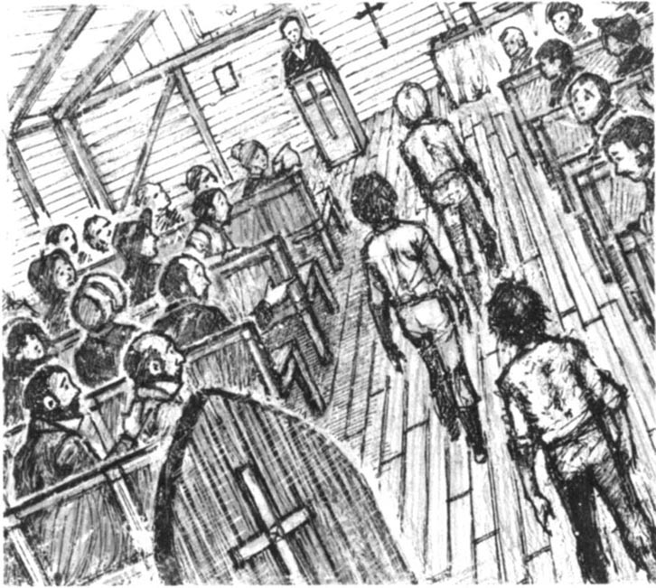
And everybody sang, and smiled, and laughed for a long time. It was St Petersburg's happiest funeral.
* * *
The weeks went by, and the judge came to St Petersburg. On the day before Muff Potter's trial, Huck and Tom met in the street near Tom's house. Huck was unhappy.
'Tom, you didn't tell anyone about — you know?'
'No, I didn't. But Huck, what about Muff? People are saying he's the killer. And he's going to die!'
'But we can't tell anyone about Injun Joe,' said Huck. 'I don't want to die, too! Do you?'
No, Tom didn't want to die. But he couldn't forget Muff Potter's face in the jail — old, tired, and unhappy. And Injun Joe was a free man. It wasn't right.
That night Tom came home late, and very excited. He could not sleep for two or three hours.
The next morning all the village was at Muff Potter's trial. Injun Joe was there, too. Muff waited, a tired old man with a dirty face. The judge began the trial.
Questions, questions, questions. Answers, answers, answers. And the answers were all bad for Muff Potter.
'Yes, I found the knife in the graveyard, next to Doctor Robinson's body.'
'Yes, that's Muff Potter's knife. He always carries it.'
'Yes, I saw Muff Potter in the village that afternoon. He had the knife with him then.'
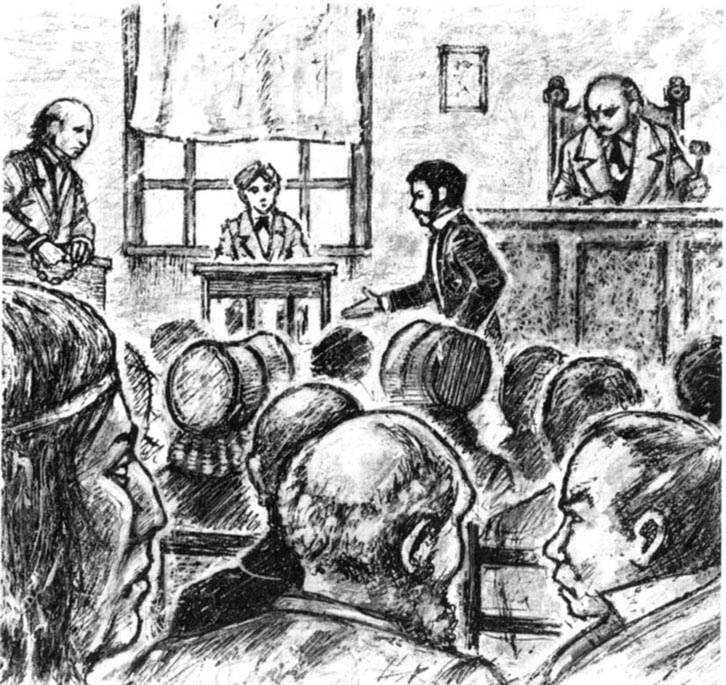
Muff Potter began to look more and more unhappy. Then the judge said: 'Call Thomas Sawyer!'
St Petersburg sat up. What did young Tom Sawyer know? Everybody looked at him, and waited.
'Thomas Sawyer, where were you on the seventeenth of June, at the hour of midnight?'
'In the graveyard.'
'Why?'
'I went there to see ghosts. With a — a — dead cat.'
St Petersburg laughed, and the judge looked angry. 'And where were you in the graveyard, Thomas?'
'Behind the trees near Hoss Williams' grave.'
Injun Joe's face suddenly went white.
'Now, my boy,' said the judge. 'Tell us your story.'
And so Tom told his story, and St Petersburg sat and listened to him with open mouths.
'... and then Muff Potter fell, and Injun Joe jumped with the knife and —'
Crash! Injun Joe jumped through the window, and was out and away in a second.
* * *
St Petersburg loved Tom for a week. But Tom was not happy. Injun Joe was not in jail, and he was a dangerous man. Tom slept badly for weeks.
The slow summer days went by. Injun Joe did not come back to St Petersburg, and Tom began to forget.
pipe n. a smoking tool 烟斗
wake v. to stop sleeping 醒来
wonderful adj. very great; extremely pleasant 极好的；极为愉快的
drown v. to die under water because you cannot breathe 淹死
funeral n. a ceremony, usually. religious, of burying or burning a dead person 葬礼
church n. a building for public Christian worship 教堂
minister n. a person who stands and says things in the front of the church in formal events such as funeral or wedding 牧师
call out to say something loudly 大声说出
judge n. the most important person at a trial who decides when somebody must go to prison 法官
crash n. a sudden loud noise made by something breaking or falling （某物破碎或倒下的）哗啦声；破裂声
杰克逊岛
3．杰克逊岛
暑假到了，不用上学啦。汤姆不愿去想穆夫·波特和印江·乔，但那并不容易。每到夜里，当他躺在床上，就会在黑暗中看到印江·乔的脸，以致无法入睡。但是他却不能告诉任何人。
一个炎热的夏日，他和乔·哈珀来到密西西比河边。两个孩子坐下来，看着往来的船只，一边钓鱼一边聊天。
“我们离开这儿吧！”汤姆突然说，“我们去别的地方找点儿乐子。”
“好啊，”乔说，“可是去干吗啊？去哪儿呢？”
“我心里有数。”汤姆说，“我们离开这儿，去杰克逊岛过日子。我们可以在露天、在大树底下睡觉。”
杰克逊岛在密西西比河上，离圣彼得斯堡南面三英里的地方，没有人在那儿居住。
“我们再问问哈克·费恩。”汤姆说，“但是别告诉你爸妈和其他人啊。回家拿点儿吃的，午夜的时候在这儿见。”
当天晚上，三个男孩儿划着一只小船，顺流来到杰克逊岛。他们带了些面包和肉，哈克还带着他的烟斗。到了那里，他们把所有东西都搬到岛上，然后在一棵古老的大树下生起了火。他们在火上烤了些肉，哎呀，肉真香啊——这真是世界上最好的晚餐！很快，他们就不再聊天了，闭上眼睛睡着了。
第二天早上，汤姆醒过来，阳光照在他的头上，微笑挂在他的脸上。哈克和乔也都醒了，三个男孩儿跑到河里去游泳，然后钓鱼，很快就钓到了六条大鱼来当早餐。他们在火上把鱼烤熟，然后吃得干干净净。他们都饿极了。
“这个，”乔兴高采烈地说，“真是顿丰盛的早餐啊！”
早餐之后，他们在岛上漫步，又游了一会儿泳，然后聊天，钓鱼，接着再游泳。下午的时候，他们回到了火堆边。突然，汤姆抬起了头，说道：“听！你们听见船的声音了吗？”
他们竖起了耳朵，然后跑着穿过小岛，向河上望去。水面上驶来了二十多只船，圣彼得斯堡所有的船都出动了。
“他们要干吗？”乔说。
“我想，他们是来找尸体的吧。”哈克说，“去年夏天，比尔·特纳掉进河里淹死的那次，他们也是这么干的。”
“你们说这回是谁死了？”乔问。
男孩子们看着船队。突然，汤姆叫了起来：“我知道谁死了！是我们，他们是来找我们的！”
这真是太棒啦。汤姆看看伙伴们。“咱们出名了！”他说，“圣彼得斯堡的每个人都在议论我们。他们都在为我们难过呢。”
夜晚来临，小伙伴们都睡觉了。但是汤姆没有睡，天亮的时候，他不见了！
“哈克，汤姆在哪儿？”乔叫道。
“我不知道。”哈克说，“但是——你看！他在那儿，正往岛上游呢。嗨，汤姆！”
吃早餐的时候，汤姆讲了自己的故事。“我昨晚回家了。”他说，“我在窗户外面偷听。乔，你妈妈也在那儿，她和波莉姨妈一直不停地哭。我听到些非常有趣的事。星期天在教堂会举行一个很大的葬礼——是为我们举行的！听着——我有个好主意。”
哈克和乔一边听一边笑，是啊，这真是个好主意。
那个晚上，小伙伴们又烤了些鱼。晚饭后哈克拿出了他的烟斗，开始抽起烟来。
“我们能抽一口吗？”汤姆问，“我想学学。”
于是哈克给汤姆和乔都做了个烟斗，三个男孩儿坐下来一起抽。
“嘿，我喜欢抽烟。”汤姆说，“这挺容易的！”
“这太容易了！”乔说，“我以后每天都要抽烟。”
可是十分钟后，汤姆和乔就越来越安静了，两个人的脸色非常有趣。
“我要去走一走。”汤姆说。他小心翼翼地站起来，走进了树林里。
“我也是。”乔很快也跟着说。
一个小时以后，两个男孩儿回来了，但是他们以后再也没有抽过烟斗。
* * *
星期天的早上，圣彼得斯堡每个人的脸上都写满了哀伤。波莉姨妈和乔的父母都在教堂里，还有三个孩子所有的小伙伴们。牧师先大大夸奖了三个孩子一番。他们的家人悲痛不已，每个人都在哭。小贝姬·撒切尔的抽泣一秒钟都没有停过。
教堂的后面有点儿动静，开始没有人听到。然后牧师抬起头来——突然停住不讲了。每个人都转回头去看，他们吃惊地张大嘴巴，合都合不上。
三个“死去的”男孩儿走了进来——汤姆走在最前面，乔在中间，最后是哈克。
有一会儿，没有人动或是讲话，然后大家骚动起来。波莉姨妈和乔的妈妈跑到孩子们身旁，把他们抱住。波莉姨妈先是哭，然后笑了起来，之后又哭了。
“噢，汤姆！”她说，“你这个坏小子，但是我爱你！”
突然，牧师叫了出来：“啊，真是个值得高兴的日子啊！圣彼得斯堡善良的人们，唱起来吧！快乐起来吧！”
每个人都唱了起来，微笑着，欢笑着，持续了很久。这是圣彼得斯堡最快乐的葬礼啦。
* * *
几周过去了，法官来到了圣彼得斯堡。在审判穆夫·波特前的一天．哈克和汤姆在汤姆家附近的街上见面。哈克心事重重。
“汤姆，你没告诉其他人吧——你知道我在说什么吧？”
“没有，我没有。但是哈克，穆夫怎么办？大家都说他是凶手。他会被判死刑的！”
“但是，我们不能告诉别人是印江·乔干的。”哈克说，“我也不想死啊！难道你想？”
不，汤姆不想死，但是他不会忘记穆夫·波特在监狱里的样子——苍老、憔悴又伤心。但是印江·乔却逍遥法外，这不公平。
那天晚上，汤姆回家很晚，但是非常亢奋，过了两三个小时还睡不着。
第二天早上，村里所有人都来听证审判穆夫·波特。印江·乔也在。穆夫等待着，这老人疲惫已极，脸上脏兮兮的。法官开始审问了。
先是询问、询问、询问，然后回答、回答、回答。所有的回答都对穆夫·波特不利。
“是的，我在坟场发现了这把刀，就在鲁宾逊医生的尸体旁。”
“是的，那是穆夫·波特的刀，他总是带着它。”
“是的，那天下午我在村里看到过穆夫·波特，当时他就带着那把刀。”
穆夫·波特的脸色越来越悲哀。这时法官说：“传唤托马斯·索亚！”
全村人都坐直了。小汤姆·索亚能知道什么呢？每个人都看着他，等待着。
“托马斯·索亚，6月17日的午夜12点钟，你在哪里？”
“在坟场。”
“为什么？”
“我去看鬼魂，带着一只——一只——死猫。”
全村人都笑了起来，法官看起来生气了。“你在坟场的什么地方，托马斯？”
“在树丛后面，霍斯·威廉斯的坟附近。”
印江·乔的脸刷的一下就变白了。
“好，孩子，”法官说，“告诉我们，你看到了什么。”
接着汤姆讲述了他看到的事，所有人都坐在那儿，张大了嘴巴听着。
“……然后穆夫·波特就倒下了，印江·乔跳起来，用刀——”
哗啦一声！印江·乔跳出了窗口，转眼之间就跑掉了。
* * *
整个星期，全村人都对汤姆赞不绝口，可汤姆并不高兴。印江·乔还没有被关起来，他是个危险分子。汤姆好几个星期都睡不好觉。
漫长的夏天渐渐过去。印江·乔没有回到圣彼得斯堡，汤姆也渐渐地淡忘了这件事。
4. Treasure
4
Treasure
There is a time in every boy's life when he wants to go and dig for treasure. And that time came for Tom.
So, one hot summer's day, he went to find Huck.
Huck liked the idea of treasure. 'Where are we going to dig?' he asked.
'An old dead tree is best.'
'Who puts the treasure under old trees?'
'Robbers,' said Tom. 'And then they go away, or they forget to come back for the treasure.'
'There's a dead tree on Cardiff Hill,' said Huck. 'Let's go there! I've got an old pick and shovel.'
It was three miles to the old tree, and the boys arrived tired and hot. They dug for an hour or two, but they didn't find any treasure. Then they stopped, and Tom looked down at an old house at the foot of the hill.
'Hey, look!' he said. 'Nobody lives in that old house. Let's go there. Old houses are always good for treasure.'
'Good for ghosts, too!' said Huck.
They took the pick and shovel with them, went down the hill, and into the old house. They looked in all the rooms downstairs, and then went upstairs. But there was no treasure, and no ghosts. Then they heard a noise.
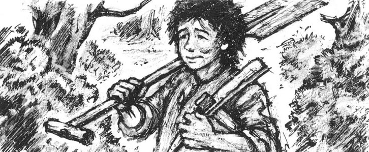
'Sh!' said Tom, suddenly. 'What's that?'
'Ghosts!' whispered Huck.
There were holes in the floor, and through them the boys could see into the rooms downstairs.
'No,' Tom whispered. 'It's two men. One is the old Spaniard. He came to live in the village last week. I don't know the other man. Sh! Let's listen to them.'
The two men sat down on the floor. The Spaniard had a green hat and long white hair; the other man was small and dark. He took out a bag and began to open it.
'It's hot in here,' the Spaniard said. He took off his green hat — and then he took off his long white hair!
'Tom!' Huck whispered upstairs. 'That's Injun Joe!'
'We took six hundred and fifty dollars when we robbed that house,' said the second man. He took some money out of the bag. 'We can take fifty dollars with us now. What are we going to do with the six hundred?'
'Leave it here,' said Injun Joe. 'We can come back and get it next week. Here, give me the bag.'
He walked across the room to the fireplace, moved two big stones from the floor, and began to dig with his knife.
Upstairs, the two boys watched excitedly. Treasure! Six hundred dollars of wonderful treasure!
Injun Joe stopped digging. 'Hello, what's this?' he said. 'There's something here. It's an old box.'
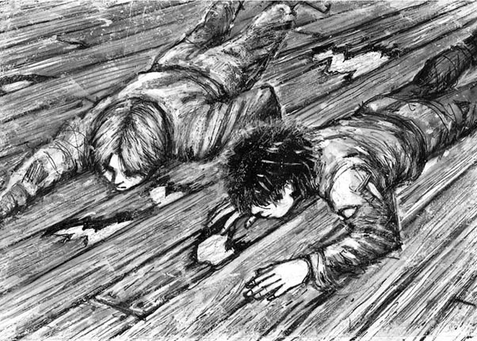
The two men got the box out and opened it.
'It's money!' said Injun Joe's friend.
Injun Joe put his hand into the box. 'There are thousands of dollars here!' he said, and the two men looked at the money with happy smiles.
'But who —' began Injun Joe's friend.
'Don't ask,' Injun Joe said. 'It's our money now.'
'We can't take it with us today,' said his friend. 'What can we do with it? Put it back under the floor?'
'Yes,' said Injun Joe. (Happy faces upstairs.) 'No! (Very unhappy faces upstairs.) Let's put it under the cross — nobody goes there. We can take it there tonight.'
When night came, the two men carried all the money away. The boys did not go after them because they were afraid of Injun Joe. But they wanted very much to find that 'cross'.
* * *
For a week the two boys thought and thought about the treasure. It was 'under the cross', but where was the cross? In St Petersburg the boys watched the 'Spaniard' carefully, but they didn't see a cross, and they didn't find the treasure.
pick n. a tool with a curved metal bar, for breaking rocks or hard ground 镐
shovel n. a spadelike tool with raised sides, for shifting coal etc. 铲；铁锹
Spaniard n. a native or inhabitant of Spain 西班牙人
fireplace n. a place for a domestic fire, especially a recess in a wall 壁炉
宝藏
4．宝藏
每个男孩子的生命中都有过这么一个时期：想去挖掘宝藏。现在汤姆也到这个时期啦。
于是，在一个炎热的夏日，汤姆去找哈克。
哈克喜欢这个寻宝的主意。“可我们去哪儿挖呢？”他问。
“最好找一棵枯死的老树。”
“谁会把宝藏埋在老树下？”
“强盗呗，”汤姆说，“他们埋下宝藏就走了，或者忘记回来取宝藏。”
“加的夫山上有一棵枯死的树。”哈克说，“我们去那儿吧！我有一把旧镐和铁锹。”
去那棵老树有三英里远，走到的时候，两个孩子又累又热。他们挖了一两个小时，可是什么宝藏也没发现，两人停了下来。汤姆看到山脚下有一栋老房子。
“嘿，看！”他说，“没人住那个老房子。我们去那儿吧。老房子里一般都有宝藏。”
“还有鬼呐！”哈克说。
他们带着镐和铁锹下了山，来到那栋老房子里，先看了楼下所有的房间，然后又上楼继续找。但是这儿既没有宝藏，也没有鬼魂。接着，他们听到有动静。
“嘘！”汤姆突然说，“那是什么？”
“是鬼！”哈克小声回答。
地板上有洞，两个男孩儿能够从洞里看到楼下。
“不是，”汤姆悄声说，“是两个人，一个是老西班牙人。他是上周来到村子里住的。另外那个我不认识。嘘！听听他们在讲什么。”
那两个人坐在地板上。西班牙人戴着一顶绿帽子，留着长长的白头发；另外那人是个小个子，长得挺黑。他拿出一个袋子，然后打开。
“这里面真热。”西班牙人说道。他把绿帽子摘下来——接着把白色的长发也拿掉了！
“汤姆！”哈克在楼上小声说，“他是印江·乔！”
“我们抢劫那屋子的时候，拿到了650块钱。”另一个人说，他从口袋里拿出一些钱。“我们能随身带上50块，那600块怎么办？”
“就放在这儿。”印江·乔说，“我们可以下星期回来拿，把袋子给我。”
他穿过房间，走到壁炉旁边，从地板上挪开两块大石头，然后用他的刀挖掘起来。
楼上的两个男孩儿兴奋地看着。宝藏！1600块钱的财富啊！
印江·乔停住不挖了。“嘿，这是什么？”他说，“这儿有东西，是个旧箱子。”
两个家伙把箱子搬出来，打开。
“是钱！”印江·乔的同伙说。
印江·乔把手伸进箱子里。“这里有好几千块钱呢！”他说。两个人看着钱，脸上都露出了得意的笑容。
“但又是谁——”他的同伙开口问。
“别问啦。”印江·乔说，“现在钱是我们的了。”
“今天我们不可能把钱带走。”他的同伙说道，“我们把它放哪儿呢？还放在地板下面？”
“对。”印江·乔说，（楼上喜不自胜。）“不！（楼上失望之极。）我们把它放在十字架下面，没人去那儿。我们今天晚上就把钱带走。”
夜晚来临，两个人把所有的钱都拿走了。两个孩子没有跟踪他们，因为害怕印江·乔，但是他们非常想找到“十字架”。
* * *
一个星期了，两个孩子脑子里只想着宝藏，它在“十字架下面”，但是十字架在哪儿呢？在圣彼得斯堡，两个孩子小心翼翼地监视着“西班牙人”，但是他们没有看到十字架，也没有发现宝藏。
5
In the cave
The next Saturday was Becky Thatcher's birthday, and all Becky's friends were very excited.
'It's going to be a wonderful day,' Becky told Tom. 'We're going to have a picnic by the river, and after that, we can visit McDougal's Cave.'
So in the morning, a big boat took Becky, Tom, and all their friends down the river. There were some older children on the boat too, but all the mothers and fathers stayed at home. Picnics are better without them!
And it was a very happy, noisy picnic.
After the picnic, the children took out their candles, and ran up the hill to the cave. The mouth of the cave was dark, and some of the children were afraid at first. But caves are exciting, so in the end everybody went in.
McDougal's Cave was very, very big, with hundreds of tunnels and rooms. The tunnels went up, down, and into the hill for miles. You could walk for days in McDougal's Cave. Nobody knew all the cave, but many people knew the tunnels near the door. You could play all day in these tunnels. Tom, of course, knew them well.
For hours the children walked and ran through the cave, up and down the tunnels, in and out of the rooms. In the evening they came out, and walked down the hill to the boat, tired but happy.
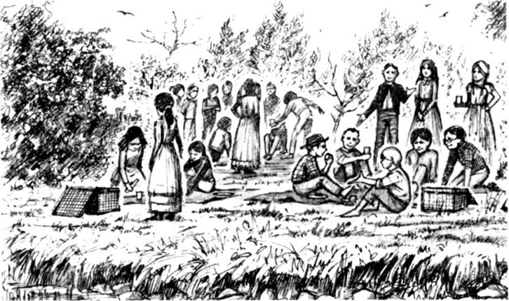
When the boat arrived back in St Petersburg, it was dark. Huck Finn saw the boat, but he did not know about the picnic. He did not go to birthday picnics, of course, because the mothers of St Petersburg did not like him. But tonight Huck was only interested in treasure — Injun Joe's treasure. Injun Joe was in an old building by the river, and Huck waited in the street near the building.
'Perhaps,' he thought, 'Injun Joe's cross is in there. And the box of money. I must wait and watch. I can tell Tom about it tomorrow.'
But Injun Joe didn't come out. At midnight it began to rain, and Huck waited all night in the cold street. In the morning he could not move and he could not speak. He felt cold, then hot, then cold, then hot again. Mrs Douglas, a woman from the church, found him in the street. She took him to her home and put him to bed. And there he stayed for two weeks. He was very ill, and so he did not hear about Tom and Becky.
But on Sunday morning all St Petersburg knew about Tom and Becky — because they were not on the boat when it came back to the village. Where were they? Were they lost in the cave? And were they alive, or dead?
* * *
At first Tom and Becky played with their friends in the cave. Then Tom wanted to go down a new tunnel, and Becky went with him.
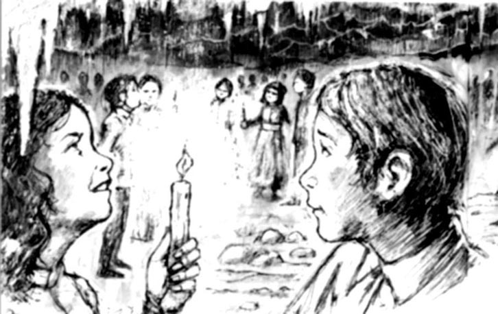
They walked and talked, and went into a second tunnel, then a third. Sometimes Tom put a mark with candle smoke on the tunnel wall — he wanted to find the mouth of the cave again! Then they came out of the tunnels into a big room. There were hundreds of bats in this room, and the candles woke them up. Tom took Becky's hand and they ran into the nearest tunnel, with the bats behind them. But one bat hit Becky's candle and it went out. The children ran and ran through the tunnels, and at last they got away from the bats. They stopped and sat down. Suddenly, it was very, very quiet.
'Where are we now, Tom?' Becky whispered, afraid.
'I don't know,' said Tom. 'I think it's time to go back. But we can't go through that big room because of the bats. Let's go down this tunnel.'
They went down one tunnel, then a second, a third, a fourth... Then they wanted to find the big room with the bats again, but they couldn't. Becky began to cry:
'Tom, we can't get out. We're lost, Tom, we're lost!'
They walked, and walked. When they were tired, they sat down. Then they got up and walked again. Time went by. Was it day, or night? They didn't know.
Then Tom wanted to find water. They had nothing to eat, and they must have something to drink. They found a very small river and sat down next to it.
'Becky,' said Tom. 'We must stay here. Near this river. This is our last candle, and...'
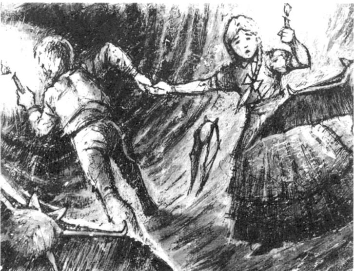
He did not finish, but Becky understood.
'Tom?'
'Yes, Becky.'
'Are they going to come and look for us?'
'Of course! When the boat gets to St Petersburg —'
'But how can they find us, in these hundreds of tunnels? Oh, Tom, Tom, we're going to die in here!'
Becky began to cry again. Then the candle went out and the two children were in the dark. They sat for hours and hours. They slept a little, then woke up, then slept again. Was it Sunday now? Or Monday?
Suddenly Tom sat up. 'Listen! Somebody's calling!'
The two children listened. They heard it again, a little nearer. They called back; then they began to walk down the tunnel in the dark, with their hands on the wall. They stopped and listened again, but now they couldn't hear anything. Slowly, they went back to their river.
They slept again, and woke up very, very hungry.
'Perhaps it's Tuesday now,' Tom thought. 'What can I do? I must do something!' Then he had an idea.
'Becky, listen. I've got a long string in my pocket. I can go down some of the small tunnels and get back to you with the string. You wait here.'
Slowly and carefully, Tom went down the first tunnel on his hands and knees. Then the tunnel wall on his right finished, and there was nothing. Tom put out his hand to feel the floor. And just then, away to his right, he saw a hand — a hand with a candle.
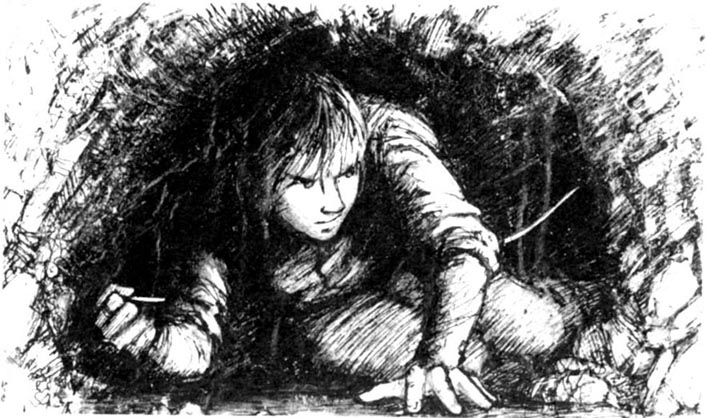
At once Tom called out. 'Help!' he cried.
The hand moved, and Tom saw an arm and a face. It was Injun Joe! Tom was very afraid, but Injun Joe was afraid too, and he quickly ran away down the tunnel.
Tom went back to Becky, but he did not tell her about Injun Joe. Tom waited for an hour, then went into a different tunnel with his string. Then a third tunnel...
* * *
It was Tuesday evening, and St Petersburg waited. Many of the villagers were in the cave, and they looked for the children day and night. But they heard nothing, saw nothing, and found nothing.
Then, late that evening, there was a sudden noise in the streets. People began to run to the Thatchers' house.
'They're here! Becky and Tom are here!'
Most of the village came to listen to Tom's story.
'It was in the sixth tunnel,' he told them. 'I went to the end of my string, and suddenly, I could see daylight! There was a little hole in the cave wall. I put my head out, and there was the river, right under my nose! I went back and got Becky, and we climbed out through the hole. Then we stopped a boat on the river. We were five miles from the mouth of the cave!'
* * *
Tom was very tired after his three days in the cave, and he went to bed and stayed there for two days. He heard about Huck and went to see him on Sunday, and then every day. But Mrs Douglas was always in the room.
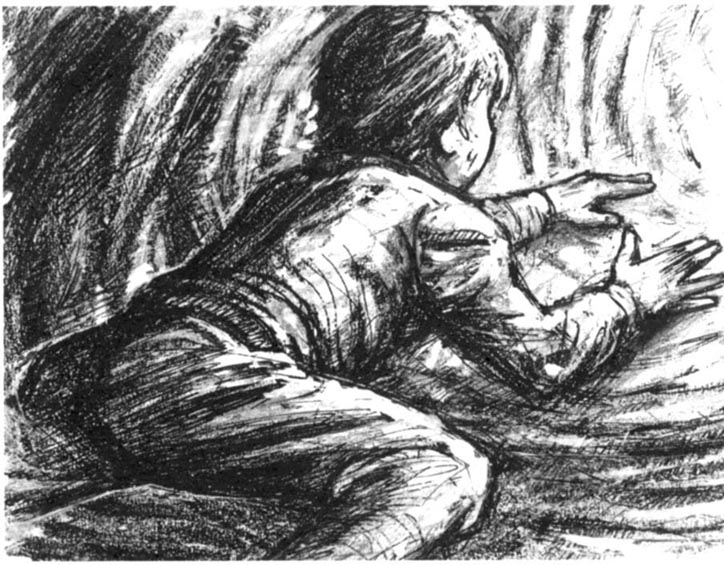
'You can just say hello,' she told Tom. 'And then you must go. Huck is very ill, and he needs to sleep.'
So Tom could not talk about anything exciting, and he could not tell Huck about Injun Joe.
One day, about two weeks after the picnic, Tom was in Becky's house, and her father came in.
'Well, Tom,' Mr Thatcher said. 'Would you like to go back to the cave again, one day?'
'I'm not afraid of that cave,' said Tom.
Mr Thatcher laughed. 'There are a lot of people like you, Tom. But nobody's going into the cave again. There are big doors across the cave mouth now — and nobody can open them!'
Tom's face went white. 'But Mr Thatcher — Injun Joe's in that cave!'
An hour later, fifty men were at the cave and they opened the doors. Injun Joe was on the ground, dead, his face to the door and his knife in his hand.
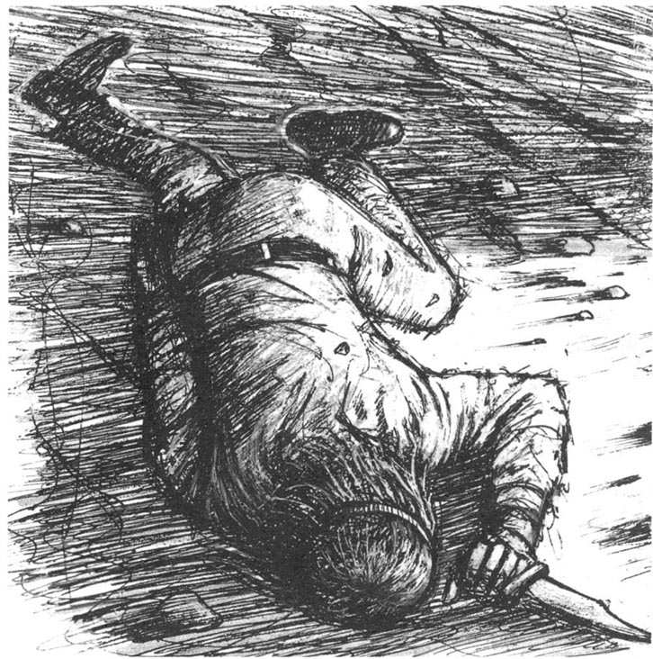
picnic n. a packed meal eaten outdoors, or an occasion when such a meal is eaten 野餐
noisy adj. making a lot of noise, or full of noise 嘈杂的；喧闹的
candle n. a stick of wax which is lit to produce light as it burns 蜡烛
tunnel n. a man-made underground passage 地下通道；隧道
perhaps adv. maybe 也许
alive adj. living 活着的
mark n. a sign, something that indicates position or acts as a pointer 标志；记号
bat n. a small animal that flies at night and looks like mouse with large wings 蝙蝠
string n. a thin rope, usually made of twisted fibres and used for lying things together 细绳；线
knee n. the part in the middle of your leg, where it bends 膝盖
daylight n. light of day 日光
5. In the cave
4．宝藏
每个男孩子的生命中都有过这么一个时期：想去挖掘宝藏。现在汤姆也到这个时期啦。
于是，在一个炎热的夏日，汤姆去找哈克。
哈克喜欢这个寻宝的主意。“可我们去哪儿挖呢？”他问。
“最好找一棵枯死的老树。”
“谁会把宝藏埋在老树下？”
“强盗呗，”汤姆说，“他们埋下宝藏就走了，或者忘记回来取宝藏。”
“加的夫山上有一棵枯死的树。”哈克说，“我们去那儿吧！我有一把旧镐和铁锹。”
去那棵老树有三英里远，走到的时候，两个孩子又累又热。他们挖了一两个小时，可是什么宝藏也没发现，两人停了下来。汤姆看到山脚下有一栋老房子。
“嘿，看！”他说，“没人住那个老房子。我们去那儿吧。老房子里一般都有宝藏。”
“还有鬼呐！”哈克说。
他们带着镐和铁锹下了山，来到那栋老房子里，先看了楼下所有的房间，然后又上楼继续找。但是这儿既没有宝藏，也没有鬼魂。接着，他们听到有动静。
“嘘！”汤姆突然说，“那是什么？”
“是鬼！”哈克小声回答。
地板上有洞，两个男孩儿能够从洞里看到楼下。
“不是，”汤姆悄声说，“是两个人，一个是老西班牙人。他是上周来到村子里住的。另外那个我不认识。嘘！听听他们在讲什么。”
那两个人坐在地板上。西班牙人戴着一顶绿帽子，留着长长的白头发；另外那人是个小个子，长得挺黑。他拿出一个袋子，然后打开。
“这里面真热。”西班牙人说道。他把绿帽子摘下来——接着把白色的长发也拿掉了！
“汤姆！”哈克在楼上小声说，“他是印江·乔！”
“我们抢劫那屋子的时候，拿到了650块钱。”另一个人说，他从口袋里拿出一些钱。“我们能随身带上50块，那600块怎么办？”
“就放在这儿。”印江·乔说，“我们可以下星期回来拿，把袋子给我。”
他穿过房间，走到壁炉旁边，从地板上挪开两块大石头，然后用他的刀挖掘起来。
楼上的两个男孩儿兴奋地看着。宝藏！1600块钱的财富啊！
印江·乔停住不挖了。“嘿，这是什么？”他说，“这儿有东西，是个旧箱子。”
两个家伙把箱子搬出来，打开。
“是钱！”印江·乔的同伙说。
印江·乔把手伸进箱子里。“这里有好几千块钱呢！”他说。两个人看着钱，脸上都露出了得意的笑容。
“但又是谁——”他的同伙开口问。
“别问啦。”印江·乔说，“现在钱是我们的了。”
“今天我们不可能把钱带走。”他的同伙说道，“我们把它放哪儿呢？还放在地板下面？”
“对。”印江·乔说，（楼上喜不自胜。）“不！（楼上失望之极。）我们把它放在十字架下面，没人去那儿。我们今天晚上就把钱带走。”
夜晚来临，两个人把所有的钱都拿走了。两个孩子没有跟踪他们，因为害怕印江·乔，但是他们非常想找到“十字架”。
* * *
一个星期了，两个孩子脑子里只想着宝藏，它在“十字架下面”，但是十字架在哪儿呢？在圣彼得斯堡，两个孩子小心翼翼地监视着“西班牙人”，但是他们没有看到十字架，也没有发现宝藏。
5
In the cave
The next Saturday was Becky Thatcher's birthday, and all Becky's friends were very excited.
'It's going to be a wonderful day,' Becky told Tom. 'We're going to have a picnic by the river, and after that, we can visit McDougal's Cave.'
So in the morning, a big boat took Becky, Tom, and all their friends down the river. There were some older children on the boat too, but all the mothers and fathers stayed at home. Picnics are better without them!
And it was a very happy, noisy picnic.
After the picnic, the children took out their candles, and ran up the hill to the cave. The mouth of the cave was dark, and some of the children were afraid at first. But caves are exciting, so in the end everybody went in.
McDougal's Cave was very, very big, with hundreds of tunnels and rooms. The tunnels went up, down, and into the hill for miles. You could walk for days in McDougal's Cave. Nobody knew all the cave, but many people knew the tunnels near the door. You could play all day in these tunnels. Tom, of course, knew them well.
For hours the children walked and ran through the cave, up and down the tunnels, in and out of the rooms. In the evening they came out, and walked down the hill to the boat, tired but happy.
When the boat arrived back in St Petersburg, it was dark. Huck Finn saw the boat, but he did not know about the picnic. He did not go to birthday picnics, of course, because the mothers of St Petersburg did not like him. But tonight Huck was only interested in treasure — Injun Joe's treasure. Injun Joe was in an old building by the river, and Huck waited in the street near the building.
'Perhaps,' he thought, 'Injun Joe's cross is in there. And the box of money. I must wait and watch. I can tell Tom about it tomorrow.'
But Injun Joe didn't come out. At midnight it began to rain, and Huck waited all night in the cold street. In the morning he could not move and he could not speak. He felt cold, then hot, then cold, then hot again. Mrs Douglas, a woman from the church, found him in the street. She took him to her home and put him to bed. And there he stayed for two weeks. He was very ill, and so he did not hear about Tom and Becky.
But on Sunday morning all St Petersburg knew about Tom and Becky — because they were not on the boat when it came back to the village. Where were they? Were they lost in the cave? And were they alive, or dead?
* * *
At first Tom and Becky played with their friends in the cave. Then Tom wanted to go down a new tunnel, and Becky went with him.
They walked and talked, and went into a second tunnel, then a third. Sometimes Tom put a mark with candle smoke on the tunnel wall — he wanted to find the mouth of the cave again! Then they came out of the tunnels into a big room. There were hundreds of bats in this room, and the candles woke them up. Tom took Becky's hand and they ran into the nearest tunnel, with the bats behind them. But one bat hit Becky's candle and it went out. The children ran and ran through the tunnels, and at last they got away from the bats. They stopped and sat down. Suddenly, it was very, very quiet.
'Where are we now, Tom?' Becky whispered, afraid.
'I don't know,' said Tom. 'I think it's time to go back. But we can't go through that big room because of the bats. Let's go down this tunnel.'
They went down one tunnel, then a second, a third, a fourth... Then they wanted to find the big room with the bats again, but they couldn't. Becky began to cry:
'Tom, we can't get out. We're lost, Tom, we're lost!'
They walked, and walked. When they were tired, they sat down. Then they got up and walked again. Time went by. Was it day, or night? They didn't know.
Then Tom wanted to find water. They had nothing to eat, and they must have something to drink. They found a very small river and sat down next to it.
'Becky,' said Tom. 'We must stay here. Near this river. This is our last candle, and...'
He did not finish, but Becky understood.
'Tom?'
'Yes, Becky.'
'Are they going to come and look for us?'
'Of course! When the boat gets to St Petersburg —'
'But how can they find us, in these hundreds of tunnels? Oh, Tom, Tom, we're going to die in here!'
Becky began to cry again. Then the candle went out and the two children were in the dark. They sat for hours and hours. They slept a little, then woke up, then slept again. Was it Sunday now? Or Monday?
Suddenly Tom sat up. 'Listen! Somebody's calling!'
The two children listened. They heard it again, a little nearer. They called back; then they began to walk down the tunnel in the dark, with their hands on the wall. They stopped and listened again, but now they couldn't hear anything. Slowly, they went back to their river.
They slept again, and woke up very, very hungry.
'Perhaps it's Tuesday now,' Tom thought. 'What can I do? I must do something!' Then he had an idea.
'Becky, listen. I've got a long string in my pocket. I can go down some of the small tunnels and get back to you with the string. You wait here.'
Slowly and carefully, Tom went down the first tunnel on his hands and knees. Then the tunnel wall on his right finished, and there was nothing. Tom put out his hand to feel the floor. And just then, away to his right, he saw a hand — a hand with a candle.
At once Tom called out. 'Help!' he cried.
The hand moved, and Tom saw an arm and a face. It was Injun Joe! Tom was very afraid, but Injun Joe was afraid too, and he quickly ran away down the tunnel.
Tom went back to Becky, but he did not tell her about Injun Joe. Tom waited for an hour, then went into a different tunnel with his string. Then a third tunnel...
* * *
It was Tuesday evening, and St Petersburg waited. Many of the villagers were in the cave, and they looked for the children day and night. But they heard nothing, saw nothing, and found nothing.
Then, late that evening, there was a sudden noise in the streets. People began to run to the Thatchers' house.
'They're here! Becky and Tom are here!'
Most of the village came to listen to Tom's story.
'It was in the sixth tunnel,' he told them. 'I went to the end of my string, and suddenly, I could see daylight! There was a little hole in the cave wall. I put my head out, and there was the river, right under my nose! I went back and got Becky, and we climbed out through the hole. Then we stopped a boat on the river. We were five miles from the mouth of the cave!'
* * *
Tom was very tired after his three days in the cave, and he went to bed and stayed there for two days. He heard about Huck and went to see him on Sunday, and then every day. But Mrs Douglas was always in the room.
'You can just say hello,' she told Tom. 'And then you must go. Huck is very ill, and he needs to sleep.'
So Tom could not talk about anything exciting, and he could not tell Huck about Injun Joe.
One day, about two weeks after the picnic, Tom was in Becky's house, and her father came in.
'Well, Tom,' Mr Thatcher said. 'Would you like to go back to the cave again, one day?'
'I'm not afraid of that cave,' said Tom.
Mr Thatcher laughed. 'There are a lot of people like you, Tom. But nobody's going into the cave again. There are big doors across the cave mouth now — and nobody can open them!'
Tom's face went white. 'But Mr Thatcher — Injun Joe's in that cave!'
An hour later, fifty men were at the cave and they opened the doors. Injun Joe was on the ground, dead, his face to the door and his knife in his hand.
picnic n. a packed meal eaten outdoors, or an occasion when such a meal is eaten 野餐
noisy adj. making a lot of noise, or full of noise 嘈杂的；喧闹的
candle n. a stick of wax which is lit to produce light as it burns 蜡烛
tunnel n. a man-made underground passage 地下通道；隧道
perhaps adv. maybe 也许
alive adj. living 活着的
mark n. a sign, something that indicates position or acts as a pointer 标志；记号
bat n. a small animal that flies at night and looks like mouse with large wings 蝙蝠
string n. a thin rope, usually made of twisted fibres and used for lying things together 细绳；线
knee n. the part in the middle of your leg, where it bends 膝盖
daylight n. light of day 日光
洞中历险
5．洞中历险
下个星期六是贝姬·撒切尔的生日，贝姬所有的朋友都很兴奋。
“这一天会很棒的。”贝姬告诉汤姆，“咱们要到河边野餐，然后到麦克杜格尔山洞去玩。”
于是一大早，贝姬、汤姆，还有所有的伙伴们，乘着一条大船顺流而下，一些大孩子也上了船，但是所有的父母亲都在家里。没有他们，野餐才更自在！
而这真是个快活、热闹的聚会。
野餐结束后，孩子们取出蜡烛，跑向山上的洞。洞口很黑，一开始，有些孩子觉得害怕，但是山洞探险非常刺激，所以最后每个人都进了山洞。
麦克杜格尔山洞非常非常大，有几百条隧道和几百个洞穴。隧道迂回曲折，通到山里深达几英里的地方。在麦克杜格尔山洞里可以走上好几天呢。没有人熟悉整个山洞，但是很多人知道靠近洞口的那些隧道。在这些隧道里可以玩上整整一天。当然啦，汤姆是非常熟悉这些隧道的。
孩子们在洞里走啊，跑啊，在隧道和洞穴里穿来穿去，玩了几个小时。傍晚的时候，他们出来了，走下山来到船上，他们都很疲惫，但是玩得很尽兴。
当船终于回到圣彼得斯堡的时候，天都已经黑了。哈克·费恩看到了船，但他并不知道野餐的事。他没有参加生日聚餐，因为圣彼得斯堡的妈妈们都不喜欢他。可是今晚，哈克唯一感兴趣的就是宝藏——印江·乔的宝藏。印江·乔住在河边的一栋老房子里，哈克就在房子旁边的街上守候着。
“也许，”他想，“印江·乔的十字架就在这儿，还有那箱钱。我一定要盯住了，明天就可以告诉汤姆。”
但是印江·乔没有出来。午夜的时候，天开始下雨了，哈克在寒冷的街道上等了一整夜。早上的时候，他既动不了，也说不出话了，觉得身上一阵冷一阵热。从教堂来的道格拉斯太太在街上发现了他，把他带回了家，让他睡在床上。哈克在那儿待了两个星期。他病得很严重，所以他不知道汤姆和贝姬出了事。
但是到星期天早上，全村人都知道汤姆和贝姬出事了——因为船回到村里时，他们俩不在船上。他们在哪儿？是在山洞里迷路了吗？他们是活着，还是死了？
* * *
一开始，汤姆、贝姬和伙伴们都一块儿在山洞里玩，后来汤姆想去一条没走过的隧道，贝姬跟他一起去了。
他们边走边聊，接着又拐进了一条隧道，然后又进了另一条隧道。有时，汤姆用蜡烛烟在隧道石壁上做个记号——他想重新找到洞口！然后他们走出隧道，来到一个很大的洞穴。这里面有几百只蝙蝠，蜡烛把它们都唤醒了。汤姆抓起贝姬的手跑到最近的隧道，蝙蝠在后面追赶着他们。但是有一只蝙蝠擦过贝姬的蜡烛，把蜡烛弄灭了。两个孩子沿着隧道一直跑啊跑啊，最后终于摆脱了蝙蝠。他们停住坐了下来。突然，四周变得非常非常安静。
“我们在哪儿，汤姆？”贝姬小声问道，她害怕了。
“我不知道。”汤姆说，“我想我们应该回去了。但是我们过不了那个洞穴，因为有蝙蝠，我们走这条隧道吧。”
他们走进了一条隧道，然后是第二条、第三条、第四条……后来他们想要去找那个有蝙蝠的大洞穴了，但是却找不到。贝姬哭起来了：
“汤姆，我们出不去了。我们迷路了，汤姆，我们迷路了！”
他们走啊，走啊，累了就坐下休息，然后又起来继续走。时间渐渐过去，现在是白天还是晚上呢？他们不知道。
汤姆想要找到水源。他们没有东西吃，但是必须喝点儿什么呀。他们找到了一处很小的水流，就在旁边坐下。
“贝姬，”汤姆说，“我们只能留在这里，待在水源旁边。这是最后一根蜡烛了，而且……”
他没有说完，但是贝姬明白。
“汤姆？”
“嗯，贝姬。”
“他们会回来找我们吗？”
“当然！等船一到圣彼得斯堡——”
“但是他们怎么才能找到我们呢？这里有几百条隧道呢。哦，汤姆，汤姆，我们会死在这里的。”
贝姬又哭了起来。接着蜡烛就灭了，两个孩子坐在黑暗里。他们坐了好久好久，一会儿睡过去，一会儿醒过来，一会又睡过去。现在是星期天了吗？还是星期一呢？
突然，汤姆坐了起来。“听！有人在叫呢！”
两个孩子听着。他们又听到了那叫声，这次要近一些。他们也大叫回应，然后在黑暗中，开始用手扶着石壁顺着隧道走。他们停下又听了听，但这时却什么都听不到了。两人又慢慢地走回水边。
他们又睡着了，醒过来的时候，觉得非常非常饿。
“今天也许是星期二了。”汤姆想，“我应该怎么做呢？我一定得做点儿什么！”然后他想出了一个主意。
“贝姬，听着。我口袋里有一根很长的细绳。我可以去其他隧道看看，然后再顺着细绳回来找你。你在这里等我。”
汤姆手脚并用，小心翼翼地慢慢爬进第一条隧道。然后在他右边的石壁到了头，再没有去路了。汤姆伸出手在地上摸索。就在这时，他看到右边有一只手——手上还拿了一支蜡烛。
汤姆马上叫了起来。“救命啊！”他大喊。
那只手动了动，然后汤姆看到一条手臂和一张脸。那是印江·乔！汤姆魂飞天外，但是印江·乔也吓得不轻，他飞快地沿着隧道跑开了。
汤姆回到贝姬的身边，但是没有告诉她印江·乔的事。他等了一个小时，然后牵着细绳进了另外一条隧道，接着是第三条……
* * *
已经是星期二的傍晚了，圣彼得斯堡还在等待消息。很多村民都来到山洞里，夜以继日地寻找两个孩子。但是他们什么也听不到，什么也看不见，什么都没找到。
然而，那天深夜，街上突然骚动起来。人们开始往撒切尔家跑去。
“他们在这儿！贝姬和汤姆在这儿！”
村里大部分的人都来了，听汤姆讲他们的经历。
“那是第六条隧道，”他告诉他们，“我牵着绳子，走到了头，突然，我看到有光！洞壁上有一个小洞。我把头伸出去，看到了河水，就在我的鼻子底下！我回去找到贝姬，我们一起从洞里爬了出来。然后拦下河上的船。我们离洞口有五英里远呢！”
* * *
在山洞里待了三天，汤姆非常疲倦，他在床上躺了足足两天。他听说了哈克的消息，于是在星期天去看他，那以后汤姆每天都去找哈克。但是道格拉斯太太总在房里。
“你只能和哈克打个招呼。”她告诉汤姆，“然后你就得走了。哈克病得很重，他需要休息。”
所以汤姆没法和哈克聊天，告诉他那些刺激的事，也没法跟哈克讲印江·乔的事情。
有一天，大概是野餐过后的两个星期吧，汤姆正在贝姬的家里，她的父亲走了进来。
“哎呀，汤姆，”撒切尔先生说道，“你以后还想回到那个山洞去吗？”
“我可不害怕那个山洞。”汤姆说。
撒切尔先生笑了。“很多人都跟你一样，汤姆。但是没有人可以再进那个山洞了。现在洞口被大门封住了——没有人能够打开！”
汤姆的脸一下子变白了。“但是撒切尔先生——印江·乔还在洞里面呢！”
一个小时后，有50个人来到了山洞，他们把门打开。印江·乔就倒在地上，他死了，他的脸朝着大门，手里握着刀。
6. Under the cross
6
Under the cross
The day after Injun Joe's funeral, Huck was out of bed. He and Tom walked slowly out of the village. They had a good, long talk, and Huck heard all about the picnic, the cave, and Injun Joe.
'We're never going to find the money now,' said Huck.
'Huck,' said Tom. 'The money isn't in St Petersburg. It's in the cave — I know it is! Why was Injun Joe in the cave? Because he took the box of money there! Right?'
Huck looked excited. 'Say that again, Tom!'
'The money's in the cave! And we can get to it easily. Let's go there now! I've got some candles and a long string. We can take a boat and put it back later.'
Twenty minutes later the boys were in a boat on the Mississippi. They went eight miles down the river, and then Tom stopped by some small trees.
'Here we are!' he said.
Tom's hole was just behind the trees. Tom took a candle and climbed in. Huck climbed in after him.
'Injun Joe never found this hole,' said Tom. 'Or he did find it and couldn't get through it. It's very small.'
The boys went carefully through the tunnels with their string. Then Tom stopped.
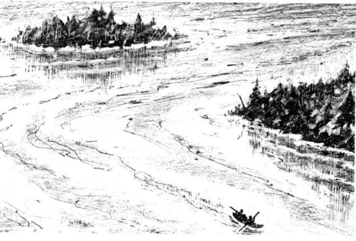
'I saw Injun Joe about here,' he said. 'And look, Huck — there's the cross!'
There was a big smoke cross on the tunnel wall. The boys looked up and down the tunnel, but there was no box of money.
'Injun Joe said under the cross,' said Tom. 'Perhaps it's under the ground. Look, we can move these stones.'
The boys took their knives and began to dig by the tunnel wall. Very soon, they found a second, smaller tunnel under the wall. They climbed down into it, and came into a small room. There was a bed, two whiskey bottles, some old shoes — and the box of money.
* * *
When somebody finds treasure, everybody hears about it very quickly. The two boys carried the box through the village. And when they got to Aunt Polly's house, half the village was with them. Everybody went into the house.
'Oh, Tom, Tom!' cried Aunt Polly. 'What is it now? And what have you got there?'
Tom put the box on the table and opened it.
There were twelve thousand dollars in that box. And suddenly, Tom Sawyer and Huckleberry Finn were the richest people in St Petersburg.
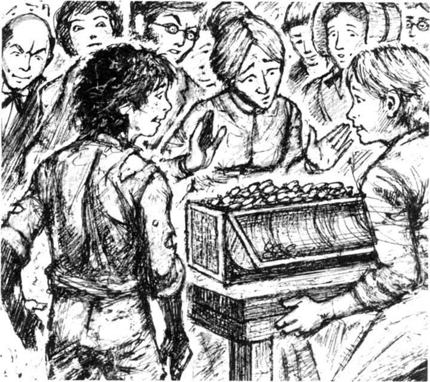
rich adj. having a lot of money or property 富有的
十字架下
6．十字架下
埋葬印江·乔的第二天，哈克可以下床活动了。他和汤姆慢慢地走出村庄。他们畅谈了一番，哈克听汤姆讲了关于野餐、山洞和印江·乔的所有的事。
“我们再也找不到那些钱了。”哈克说。
“哈克，”汤姆说，“钱不在圣彼得斯堡。钱在山洞里——我知道它在！要不然印江·乔在山洞里干吗？因为他把那箱钱放在那儿了！对吧？”
哈克非常兴奋。“说得对，汤姆！”
“钱在山洞里！我们很容易就能找到。我们现在就去吧！我有一些蜡烛和一根长绳。我们划条船去，过后再把船放回来。”
20分钟后，两个孩子已经泛舟密西西比河上了。他们顺着河流行驶了八英里，然后汤姆在几棵小树前停了下来。
“我们到了！”他说。
汤姆找到的那个洞就在这些树的后面。汤姆拿了一根蜡烛，爬了进去。哈克也跟在他后面爬了进去。
“印江·乔没找到这个洞，”汤姆说，“或者他找到了，却钻不过去。这个洞非常小。”
两个男孩儿牵着绳子，小心地在隧道里走。然后，汤姆停下了。
“我是在这儿附近看到印江·乔的，”他说，“看，哈克——十字架在这里！”
在石壁上有一个大大的、用烟熏成的十字架。他们上上下下地打量着隧道，却没有看到那一箱钱。
“印江·乔说是在十字架下面。”汤姆说，“也许是埋在地下呢。看，我们能搬开这些石头。”
两个男孩儿拿出小刀，开始在石壁下面挖起来。很快，他们在墙下面发现了另一条更小的隧道。两人爬了进去，进入到一个小小的石室。里面有一张床，两个空威士忌酒瓶和几只旧鞋子——还有那箱钱。
* * *
当有人找到宝藏，其他人很快就会听说。两个孩子把箱子抬进了村子。当他们来到波莉姨妈家的时候，村子里一半的人都跟着他们俩。每个人都挤进了屋子。
“哦，汤姆，汤姆！”波莉姨妈叫道，“又怎么了？那个箱子里有什么？”
汤姆把箱子放在桌子上，把它打开。
箱子里有12,000块钱。突然间，汤姆·索亚和哈克贝利·费恩成了圣彼得斯堡最富有的人。
ACTIVITIES: Before Reading
ACTIVITIES
Before Reading
1．Read the story introduction on the first page of the book. What does Tom Sawyer like? Tick one box each time.
1) school
YES □／NO □
2) swimming
YES □／NO □
3) getting up in the morning
YES □／NO □
4) work
YES □／NO □
5) fishing
YES □／NO □
6) adventures
YES □／NO □
2．What is going to happen in the story? Can you guess? Tick one box for each sentence.
1) Tom and Huck see a ghost.
YES □／NO □
2) Tom and Huck find a lot of money.
YES □／NO □
3) Three men take some money from the graveyard.
YES □／NO □
4) Injun Joe kills someone.
YES □／NO □
5) Someone kills Injun Joe.
YES □／NO □
ACTIVITIES: While Reading
ACTIVITIES
While Reading
1．Read Chapter 1. Are these sentences true (T) or false (F)? Rewrite the false ones with the correct information.
1) Tom lived with his mother and father.
2) Tom painted all the fence.
3) Huck Finn went to school.
4) Huck wanted to go and see ghosts.
5) Tom wanted to sit with the girls.
6) Becky Thatcher didn't like Tom's pictures.
2．Read Chapter 2. Who said this, and to whom?
1) 'Oh, let's go home!'
2) 'What are they doing here?'
3) 'I gave you the money this morning.'
4) 'I want that money!'
5) 'Don't hit my friend.'
6) 'Why did you kill him?'
7) 'I'm afraid of Injun Joe.'
3．Before you read Chapter 3, can you guess what happens? Choose one of these answers.
1) Tom doesn't tell the Sheriff the true story of the killing, and at the trial, they say that Muff Potter must die.
2) Tom tells the Sheriff the true story of the killing and Injun Joe goes to jail.
3) Tom tells the true story but Injun Joe runs away.
4) Tom tells the true story and Injun Joe tries to kill him.
4．Read Chapter 3. Choose the best question-word for these questions, and then answer them.
Why / What / Where
1) ... couldn't Tom sleep?
2) ... was Jackson's Island?
3) ... did the boys have for breakfast?
4) ... did the boys see on the river in the afternoon?
5) ... happened to Tom and Joe when they smoked?
6) ... did the boys go on Sunday morning?
5．Read Chapter 4, and then answer these questions.
1) Why did Tom and Huck go to the old tree?
2) Where did they go after that?
3) How could they see into the rooms downstairs?
4) Who was the Spaniard?
5) How much money was in the bag?
6) What did Injun Joe find under the floor?
7) Where did Injun Joe want to put the money?
6．Read Chapter 5. Put these sentences in the correct order.
1) Tom saw Injun Joe, but Injun Joe ran away.
2) Soon, Tom and Becky were lost in the tunnels.
3) But then Tom and Becky left their friends.
4) One Saturday, a big boat took Becky, Tom and their friends down the river.
5) Two weeks later, Mr Thatcher told Tom that there were big doors across the cave mouth.
6) They needed water, so Tom found a small river.
7) So Tom and Becky got out of the cave and went home.
8) Fifty men went to the cave and found Injun Joe dead.
9) In the sixth tunnel, Tom saw daylight and found a hole.
10) All the children went into the cave.
11) Then Tom left Becky and went down a tunnel.
12) Tom and Becky went into a room of bats, and ran away.
7．Read Chapter 6. Here are some untrue sentences about it. Change them into true sentences.
1) Tom and Huck went into the cave through the doors.
2) They found a paint cross on the tunnel wall.
3) They found an empty box in the room at the end of the second tunnel.
4) Nobody in the village heard about the treasure.
ACTIVITIES: After Reading
ACTIVITIES
After Reading
1．What did Tom tell the judge at Muff Potter's trial? Match these halves of sentences to make his story.
1) I went to the graveyard with a dead cat...
2) Suddenly, I saw three ghosts,...
3) Doctor Robinson was there with Injun Joe and Muff Potter,...
4) They stopped at Hoss Williams' grave...
5) Muff asked the doctor for five dollars more,...
6) Then Injun Joe got angry with the doctor...
7) Muff jumped on the doctor...
8) The doctor hit Muff on the head...
9) But Injun Joe had Muff's knife...
10) and Muff fell down.
11) and the doctor hit him.
12) because I wanted to see ghosts.
13) and he killed the doctor with it.
14) but the doctor said 'no'.
15) and Joe and Muff started to dig.
16) but they weren't really ghosts, they were men.
17) and he and the doctor began to fight.
18) and I knew that they were graverobbers.
2．Here is a conversation between Aunt Polly and Tom. Complete Aunt Polly's questions. Use as many words as you like.
AUNT POLLY: Oh, Tom. You bad boy. I thought that you were dead. Where ______?
TOM: On Jackson's Island.
AUNT POLLY: Jackson's Island? Why ______?
TOM: Because we wanted to do something exciting.
AUNT POLLY: What's so exciting about Jackson's Island? There's nothing there. Where ______?
TOM: Under the trees. It was wonderful.
AUNT POLLY: Well, I don't know! What ______?
TOM: We took some bread and meat with us. Then, in the morning, we went fishing and got fish for our breakfast.
3．Here is a newspaper report about the treasure. Find the ten mistakes and correct them.
Two children, Tom Sawyer and Becky Thatcher, found twelve hundred dollars in a bag in McDougal's Cave. Muff Potter found the money under a tree and put it in a big room at the end of a tunnel. He marked the floor of the tunnel with a cross. But then he couldn't get out of the cave because of the ghosts at the mouth of the cave. When the men found him, he was alive, so there is going to be a trial.
4．Here is a new illustration for the story. Find the best place in the story to put the picture, and answer these questions.
The picture goes in Chapter ______.
1) Who is telling his story to the judge?
2) Who is jumping through the window?
3) Why?
Now write a caption for the illustration.
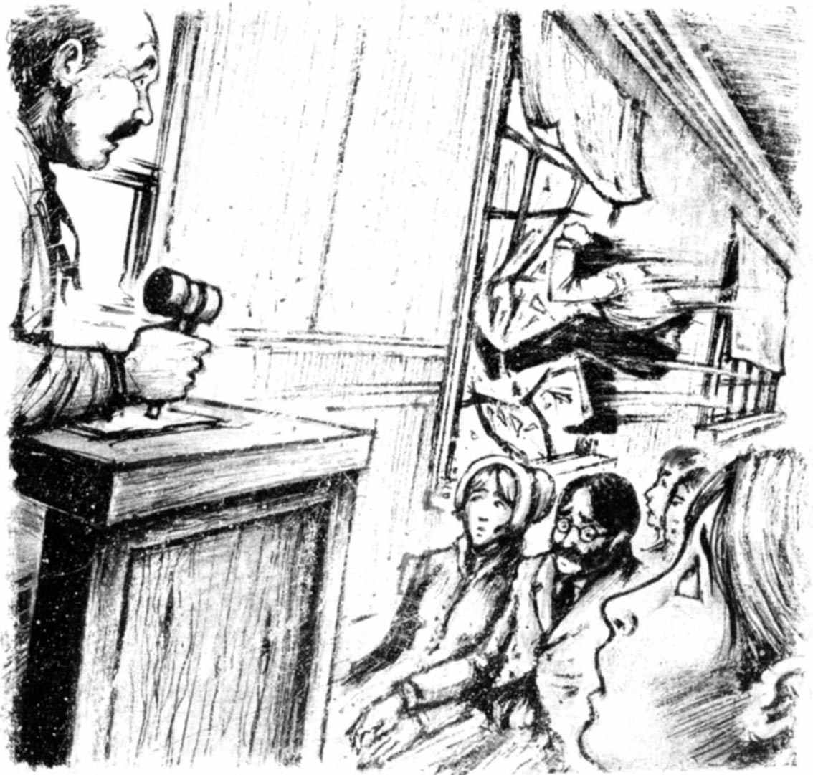
Caption: __________________________.
5．Imagine that you are lost in a cave. Which of these things are you going to use to help you? Make sentences like this.
You can use a/some ______ to ______.
bat, candle, knife, money, pipe, shoes, shovel, string, whiskey
6．Here are some new chapter titles. Match them with the chapter numbers. Do you like all of them? Why, or why not?
| 1, 2, 3, 4, 5, 6 | |
| Becky's birthday picnic | The money in the cave |
| Tom paints a fence | The man with the green hat |
| Injun Joe kills the doctor | Tom and Becky are lost |
| Tom smokes a pipe | Ghosts |
| Tom and the apples | The old house |
| The old tree | Huck gets ill |
| The happiest funeral | A new girl at school |
| Graverobbers | Twelve thousand dollars |
| The richest boys in town | Muff Potter's trial |
封底
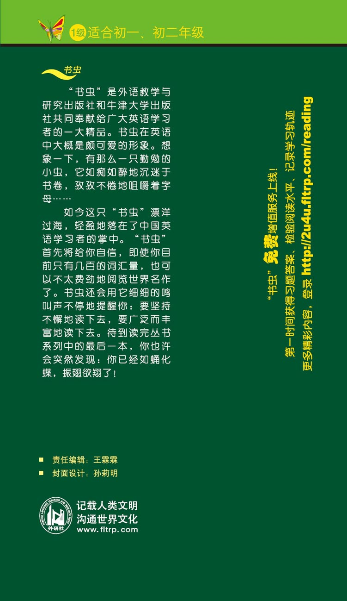